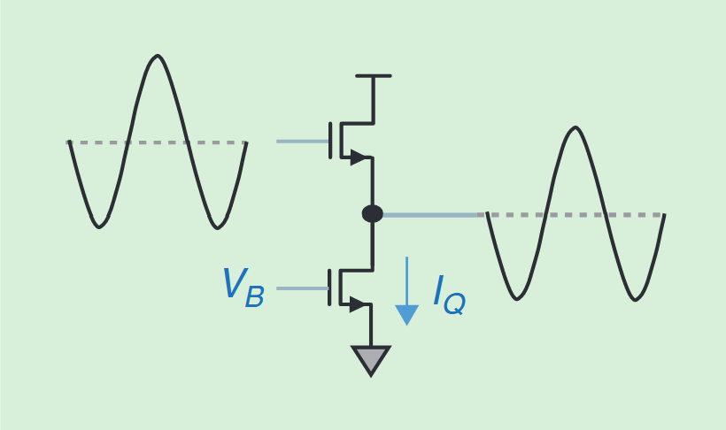
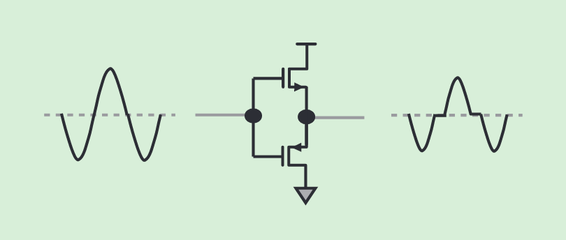
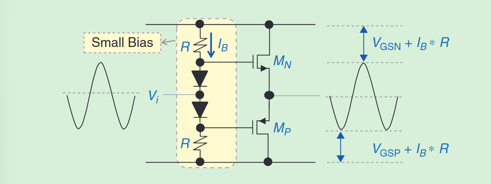
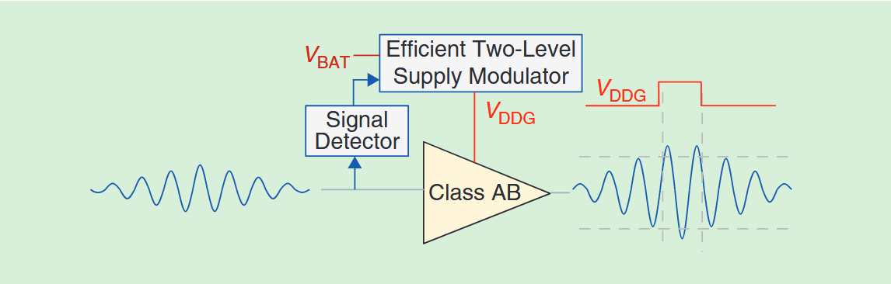
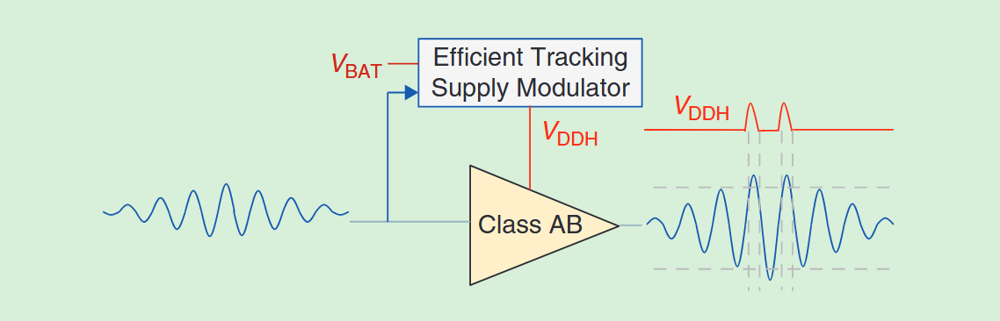
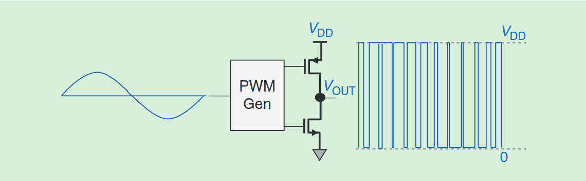
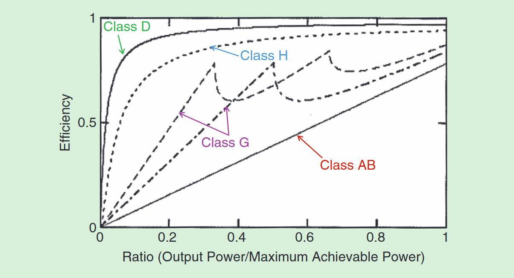
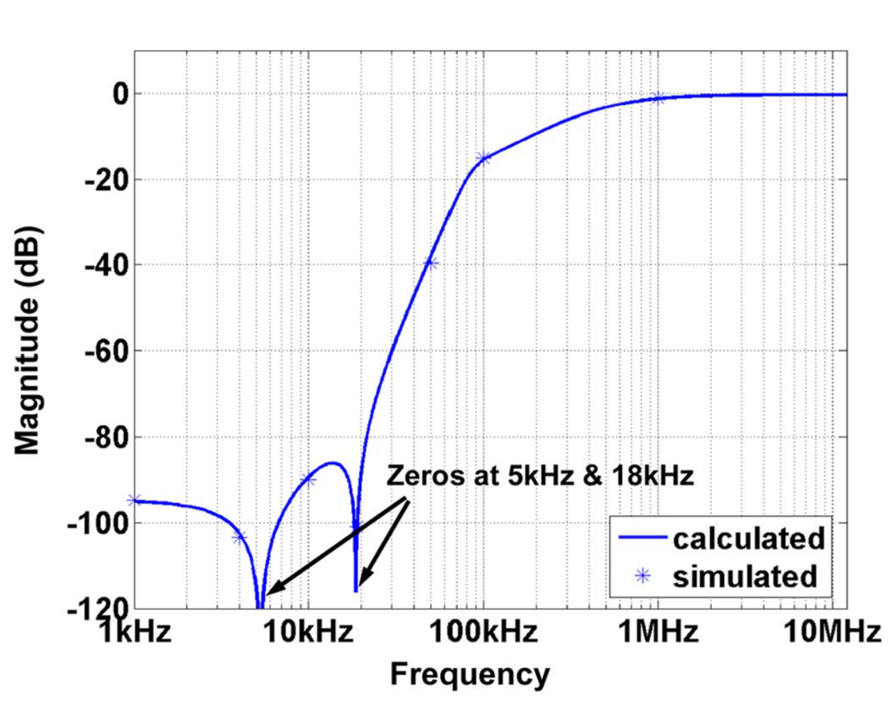
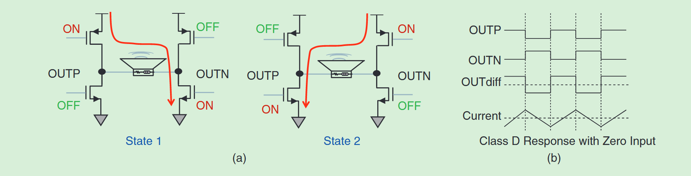
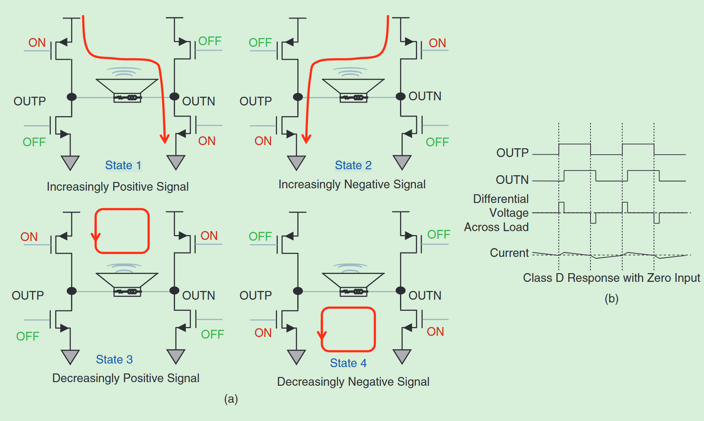

Comparasion of different Audio Amplifiers
1. Class A, B, AB amplifier
These 3 types of audio amplifier could be the classic design.
Class A could be the one most classic. It uses 2 transistors (here 2 NMOS) to drive the signal: with the transistor below always ON with a given bias source, which ensures that $V_{GS} > V_{th}$. With a constant bias $V_B$ the current $I_Q$ can be also regarded as constant. Now the bottom NMOS is equavalent as a current source to provide a DC working point.

As a classic analog amplifier it shows a very good linear performance, the output well follows the input except dc level shifting. but the low efficiency (bottem NMOS is always ON no matter if there is any input signal) and high heating problem cause that it can not widely implemented for practical using.
Class B amplifier avoid such a disadvantage with connecting the Gate of both NMOS and PMOS to increase the effeciency. However, lack of bias source it products a deadzone around the zero Voltage. It causes big distortion especailly for tiny input signal.

Class Ab amplifier is a conbination of both A and B amplifier. It uses 2 or 2 symmetric groups of diodes to produce a small bias which realizes that $V_{bias}>V_{th}$, to run above the cut-off point.

But there are still some disadvantages for it:
- static loss: the bias circuit pruduces static loss over diodes and resistors.
- cross-distortion: each transistor will conduct slightly more than one half cycle, which depends on the practically choosen bias point.
- CMOS based class AB amplifier: limitied output range due to headroom requirements.
- a fixed voltage supply, which is defined by the peak value of input, can be inefficient for tiny audio signal.
2. Class G, H amplifier
Class G and H amplifier are designed to solve the loss caused by the fixed voltage supply.

Classic class G amplifier includes a class AB amplifier and a signal detector connecting with a adjustable Voltage supply. It ensures that the amplifier has several optional levels of voltage supply, which can be adjusted to reduce the loss.

Class H corresponds to a ideal case, when the number of levels of voltage supple from class G is increased to infinite (or a much bigger range), which leads to a higher effeciency.
But another disadvantage is also here because the transistors are always work in linear or saturation region, as an amplifier. The loss of transistors themself, especially in case of big current flowing through, causes some distortion.
3. Class D amplifier
An ideal switch could be:
- large current passing through and no voltage dropping cross (switch
ON); - large voltage dropping cross and no current passing through (switch
OFF).

With PWM technology, the power loss can although practically not 100% be eliminated, but uniformly, not proportionally with the loading current.
The figure shows only one direction of output voltage, for bi-directional output, a H-bridge is useful. Afterwards, the output will be filtered by either external filter or by the speak coil itself.
And by following figure we can check the comparasion of effeciency of each type of amplifier, according to what is written above.

4. Some other amplifiers
| Amplifier's Type | Feature |
|---|---|
| Class C | has the greatest efficiency but the poorest linearity. |
| Class E/F | uses harmonic resonators in the output network to shape the output waveform into a square wave, are capable of high efficiencies of more than 90% if infinite harmonic tuning is used. |
| Class I | has two sets of complementary output switching devices arranged in a parallel pushpull configuration with both sets of switching devices sampling the same input waveform. |
| Class S | is a nonlinear switching mode amplifier similar in operation to the class D amplifier. |
| Class T | combines both the low distortion signal levels of a class AB amplifier and the power efficiency of a class D amplifier. |
5. Class D + H amplifier
5.1 class D amplifier with PWM/PDM
For PDM, the goal of it is to adjust the denity of the pulse, has such features:
- drive with the frequency of comparator $f_s$, much higher than $f_{osc}$ of PWM, corresponds better performance after LP-filter and therefore without time distortion caused by uniform-sampling. However higher switch loss because of high frequency of switching.
- High frequency so is much more influenced by Clock Jitter.
For PWM, some problems above could be solved:
- reduce the switching rate $f_{osc}$ as much as to reduce the influence of Clock Jitter.
- low frequency of sitching rate can also increase the performance of uniform-sampling of camparator.
- for small audio signal levels, the PWM modulation reduces the impact of supply noise.
- can directly use given MCU to design, rather than self building circuit with 1bit $\Sigma - \Delta $ ADC/DAC.
5.2 Details of class D amplifier with PWM
This part would be divided into 3 sub parts:
- structure of the whole controller
- structure of the digital LP filter
- structure of the switching driver (H Bridge)
For the first sub-part, the whole structure of the controller could be:

Here, cause the output of PWM module is a sequence (n-bit) of digital signal, so a digital (discrete) LP Filter is necessary to used.
For the second part of digital filter, the functionality of it should:
- it should keep all information in low-frequency region for the “Stellgröße”
- for the noise, which locates in the output of pwm output, caused by uniform-sampling or whatever, the NTF (noise transfer function) should reduce low-frequency information limitted in our working region from 1Hz to 20kHz.
Its structure should be like:

According to the paper:
Increasing the modulator order beyond 4th does not significantly enhance the quantization noise performance, but rather decreases the maximum input range for which the modulator is stable.
Here the Bode diagramm of the NTF is like, as we have described before:

The third part is about the structure of the switching driver. There are 2 ways to drive it: AD sheme and BD sheme.
For AD sheme:

Only involves 2 states, which means much easier circuit design. But much more power consumption and more harmonics, especially around 0 point.
BD sheme could solve this problem:

Using free-wheeling to avoid some unnecessary power consumption. And also lower current ripple.
5.3 Whole structure of Class D + H/G amplifier

6. Reference
[1] M. Wang, X. Jiang, J. Song and T. L. Brooks, “A 120 dB Dynamic Range 400 mW Class-D Speaker Driver With Fourth-Order PWM Modulator,” in IEEE Journal of Solid-State Circuits, vol. 45, no. 8, pp. 1427-1435, Aug. 2010
[2] X. Jiang, “Fundamentals of Audio Class D Amplifier Design: A Review of Schemes and Architectures,” in IEEE Solid-State Circuits Magazine, vol. 9, no. 3, pp. 14-25, Summer 2017